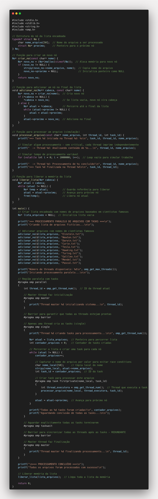

Tarefa 7 - Processamento Paralelo com Tasks e Lista Encadeada
Descrição
Este programa demonstra o uso de OpenMP Tasks para processamento paralelo de uma lista encadeada. O programa cria uma lista de arquivos fictícios (nomeados com sobrenomes de cientistas famosos) e utiliza tasks para processar cada arquivo de forma paralela e assíncrona.
Funcionalidades
- Lista Encadeada: Estrutura de dados dinâmica contendo nomes de arquivos
- OpenMP Tasks: Criação de tarefas paralelas para processamento assíncrono
- Distribuição Dinâmica: Tasks são distribuídas automaticamente entre threads disponíveis
- Sincronização Explícita: Uso de barrier, taskwait, single e master
- Gerenciamento de Memória: Liberação adequada da memória alocada
O que são Tasks em OpenMP?
Conceito Fundamental
Em OpenMP, tasks são unidades independentes de trabalho que podem ser executadas de forma assíncrona por qualquer thread disponível em uma região paralela. Diferentemente dos loops paralelos tradicionais (#pragma omp for), que dividem iterações de forma estruturada, as tasks oferecem um modelo de paralelismo mais flexível e dinâmico.
Características das Tasks
- Criação Dinâmica: Tasks podem ser criadas em tempo de execução, permitindo estruturas de dados irregulares
- Execução Assíncrona: Não há ordem garantida de execução entre tasks
- Escalonamento Automático: O runtime OpenMP distribui tasks automaticamente entre threads disponíveis
- Work Stealing: Threads ociosas podem "roubar" tasks de outras threads ocupadas
- Aninhamento: Tasks podem criar outras tasks, formando hierarquias complexas
Modelo de Execução
O modelo de tasks em OpenMP funciona como um sistema de produtor-consumidor:
- Produção: Uma ou mais threads criam tasks e as colocam em uma fila
- Consumo: Threads disponíveis retiram tasks da fila e as executam
- Balanceamento: O runtime redistribui automaticamente a carga de trabalho
Quando Usar Tasks
- Processamento de listas encadeadas, árvores ou grafos
- Algoritmos divide-and-conquer (como quicksort recursivo)
- Cargas de trabalho irregulares ou imprevisíveis
- Situações onde o número de trabalhos é desconhecido em tempo de compilação
Vantagens das Tasks
1. Balanceamento Dinâmico
- Tasks são distribuídas automaticamente
- Threads ociosas pegam novas tasks
- Melhor utilização de recursos
2. Flexibilidade
- Número variável de tasks
- Criação condicional de tasks
- Aninhamento de tasks possível
3. Desacoplamento
- Criação e execução são independentes
- Uma thread cria, outras executam
- Escalabilidade natural
Conceitos Demonstrados
1. OpenMP Tasks
#pragma omp task firstprivate(nome_local, task_id)
{
int thread_executora = omp_get_thread_num();
processar_arquivo(nome_local, thread_executora, task_id);
}
2. Diretiva Single
#pragma omp single
{
// Apenas uma thread cria todas as tasks
// Evita duplicação de trabalho
}
3. Diretiva Master
#pragma omp master
{
// Executado apenas pela thread master (ID 0)
// Usado para inicialização e finalização
}
4. Barreira de Sincronização
#pragma omp barrier
{
// Todas as threads esperam aqui
// Garante sincronização entre threads
}
5. Task Wait
#pragma omp taskwait
{
// Espera todas as tasks criadas pela thread atual
// Sincronização explícita de tasks
}
Estrutura do Programa
Lista Encadeada
typedef struct No {
char nome_arquivo[50];
struct No* proximo;
} No;
Arquivos de Cientistas Famosos
Einstein.txt
Newton.txt
Darwin.txt
Curie.txt
Tesla.txt
Hawking.txt
Turing.txt
Galileo.txt
Mendel.txt
Pascal.txt
Fluxo de Execução
- Criação da Lista: Adiciona 10 arquivos fictícios à lista encadeada
- Região Paralela: Inicia região paralela com múltiplas threads
- Inicialização Master: Thread master (ID 0) executa inicialização
- Barreira Inicial: Todas as threads sincronizam antes do processamento
- Criação de Tasks: Uma única thread percorre a lista e cria tasks
- Processamento Paralelo: Tasks são executadas por diferentes threads
- Task Wait: Aguarda explicitamente todas as tasks terminarem
- Barreira Final: Sincronização após conclusão das tasks
- Finalização Master: Thread master executa limpeza final
- Limpeza: Libera memória da lista encadeada
Análise de Performance
Características Observadas
- Distribuição Não-Determinística: A cada execução, tasks podem ser executadas por threads diferentes
- Utilização Eficiente: Múltiplas threads trabalham simultaneamente
- Overhead Mínimo: Tasks são criadas rapidamente com sincronização eficiente
Conceitos de Programação Paralela
- Task Parallelism: Diferentes threads executam diferentes tarefas
- Work Stealing: OpenMP implementa algoritmo de work stealing
- Fork-Join Estendido: Tasks estendem o modelo fork-join tradicional
Comandos OpenMP Utilizados
| Comando |
Função |
Uso no Programa |
| #pragma omp single |
Execução por apenas uma thread |
Criação de tasks (evita duplicação) |
| #pragma omp master |
Execução pela thread master (ID 0) |
Inicialização e finalização do sistema |
| #pragma omp barrier |
Sincronização de todas as threads |
Pontos de sincronização no fluxo |
| #pragma omp task |
Criação de tarefas assíncronas |
Processamento paralelo dos arquivos |
| #pragma omp taskwait |
Aguardar conclusão das tasks |
Sincronização explícita das tasks |
Discussão dos Comandos OpenMP
Diretiva #pragma omp task
A diretiva #pragma omp task é o coração do modelo de tasks em OpenMP. Ela encapsula uma unidade de trabalho que pode ser executada assincronamente por qualquer thread disponível.
#pragma omp task [cláusulas]
{
// Bloco de código da task
// Executado de forma assíncrona
}
Principais Cláusulas da Diretiva Task:
- firstprivate(var): Copia o valor da variável para cada task
- private(var): Cada task tem sua própria cópia da variável
- shared(var): Variável compartilhada entre todas as tasks
- if(condição): Task só é criada se a condição for verdadeira
- priority(n): Define prioridade de execução da task
⚠️ Importância Crítica do firstprivate:
🚨 Por que firstprivate é ESSENCIAL:
Sem firstprivate: Todas as tasks compartilhariam as MESMAS variáveis, causando race conditions graves:
- ❌ Valores incorretos: Tasks podem ver dados de outras iterações (ex: todas processariam "Pascal.txt")
- ❌ IDs inconsistentes: Tasks teriam IDs duplicados ou incorretos
- ❌ Resultados imprevisíveis: Bugs difíceis de detectar e reproduzir
- ❌ Race conditions: Comportamento não-determinístico perigoso
Com firstprivate(nome_local, task_id):
- ✅ Cópia individual: Cada task recebe sua PRÓPRIA CÓPIA dos valores atuais
- ✅ Valores "congelados": Dados são capturados no momento da criação da task
- ✅ Eliminação de race conditions: Completamente seguro para execução paralela
- ✅ Processamento correto: Garante que cada task processe o arquivo correto
Ciclo de Vida de uma Task:
- Criação: Task é criada e colocada na fila do runtime
- Escalonamento: Runtime escolhe uma thread para executar
- Execução: Thread executa o código da task
- Finalização: Task é marcada como concluída
Diretiva #pragma omp taskwait
A diretiva #pragma omp taskwait fornece um ponto de sincronização onde a thread atual aguarda a conclusão de todas as tasks que ela criou (tasks filhas). É essencial para garantir que trabalho dependente só execute após tasks anteriores terminarem.
#pragma omp parallel
{
#pragma omp single
{
for (int i = 0; i < n; i++) {
#pragma omp task
{
processar_elemento(i);
}
}
#pragma omp taskwait // Espera todas as tasks terminarem
printf("Todas as tasks concluídas!\n");
}
}
Comportamento do taskwait:
- Escopo Local: Só aguarda tasks criadas pela thread atual
- Execução Ativa: A thread pode executar outras tasks enquanto espera
- Recursivo: Também aguarda tasks criadas pelas tasks filhas
- Implícito: Ocorre automaticamente no final de regiões paralelas
Diferença entre taskwait e barrier:
| Aspecto |
taskwait |
barrier |
| Escopo |
Tasks da thread atual |
Todas as threads |
| Granularidade |
Nível de task |
Nível de thread |
| Atividade |
Pode executar outras tasks |
Bloqueia completamente |
| Uso Típico |
Sincronização de tasks |
Sincronização de threads |
Exemplo Prático - Combinação dos Três Conceitos:
#pragma omp parallel
{
#pragma omp for nowait // Sem barreira implícita
for (int i = 0; i < primeira_fase; i++) {
preparar_dados(i);
}
#pragma omp single
{
for (int j = 0; j < segunda_fase; j++) {
#pragma omp task firstprivate(j)
{
processar_complexo(j);
}
}
#pragma omp taskwait // Aguarda todas as tasks
}
#pragma omp barrier // Sincroniza todas as threads
// Código que precisa de todas as threads sincronizadas
}
Cláusula nowait
A cláusula nowait é uma otimização importante que remove a barreira implícita no final de construções paralelas. Normalmente, construções como #pragma omp for ou #pragma omp single incluem uma barreira implícita que força todas as threads a aguardarem até que a última termine.
// Sem nowait - barreira implícita
#pragma omp for
for (int i = 0; i < n; i++) {
trabalho_rapido(i);
}
// Todas as threads esperam aqui
// Com nowait - sem barreira
#pragma omp for nowait
for (int i = 0; i < n; i++) {
trabalho_rapido(i);
}
// Threads continuam imediatamente
Quando Usar nowait:
- Quando threads terminam em tempos muito diferentes
- Para permitir que threads rápidas comecem o próximo trabalho
- Em pipelines onde o trabalho pode ser sobreposto
- Cuidado: Pode causar condições de corrida se não usado corretamente
Exemplo de Saída
Criando lista de arquivos fictícios...
Número de threads disponíveis: 8
Iniciando processamento paralelo...
Thread master 0 inicializando sistema...
Thread 7 criando tasks para processamento...
==> Task 1 iniciada na Thread 1: Einstein.txt
-> Thread 1: Analisando conteúdo de Einstein.txt...
==> Task 2 iniciada na Thread 4: Newton.txt
-> Thread 4: Analisando conteúdo de Newton.txt...
==> Task 3 iniciada na Thread 5: Darwin.txt
-> Thread 5: Analisando conteúdo de Darwin.txt...
==> Task 4 iniciada na Thread 0: Curie.txt
-> Thread 0: Analisando conteúdo de Curie.txt...
==> Task 5 iniciada na Thread 2: Tesla.txt
-> Thread 2: Analisando conteúdo de Tesla.txt...
Todas as 10 tasks foram criadas!
Aguardando conclusão de todas as tasks...
==> Task 8 iniciada na Thread 7: Galileo.txt
-> Thread 7: Analisando conteúdo de Galileo.txt...
==> Task 6 iniciada na Thread 6: Hawking.txt
-> Thread 6: Analisando conteúdo de Hawking.txt...
-> Thread 5: Processamento de Darwin.txt concluído!
==> Task 3 finalizada na Thread 5
-> Thread 4: Processamento de Newton.txt concluído!
==> Task 2 finalizada na Thread 4
-> Thread 0: Processamento de Curie.txt concluído!
==> Task 4 finalizada na Thread 0
==> Task 10 iniciada na Thread 4: Pascal.txt
-> Thread 4: Analisando conteúdo de Pascal.txt...
==> Task 9 iniciada na Thread 5: Mendel.txt
-> Thread 5: Analisando conteúdo de Mendel.txt...
-> Thread 1: Processamento de Einstein.txt concluído!
==> Task 1 finalizada na Thread 1
-> Thread 2: Processamento de Tesla.txt concluído!
==> Task 5 finalizada na Thread 2
-> Thread 4: Processamento de Pascal.txt concluído!
==> Task 10 finalizada na Thread 4
-> Thread 5: Processamento de Mendel.txt concluído!
==> Task 9 finalizada na Thread 5
-> Thread 6: Processamento de Hawking.txt concluído!
==> Task 6 finalizada na Thread 6
-> Thread 7: Processamento de Galileo.txt concluído!
==> Task 8 finalizada na Thread 7
==> Task 7 iniciada na Thread 3: Turing.txt
-> Thread 3: Analisando conteúdo de Turing.txt...
-> Thread 3: Processamento de Turing.txt concluído!
==> Task 7 finalizada na Thread 3
Thread master 0 finalizando processamento...
Todos os arquivos foram processados com sucesso!
Comparação: Tasks vs Parallel For
| Aspecto |
Tasks |
Parallel For |
| Estrutura de Dados |
Qualquer (lista, árvore) |
Arrays/loops |
| Balanceamento |
Dinâmico automático |
Estático/manual |
| Flexibilidade |
Alta |
Limitada |
| Overhead |
Ligeiramente maior |
Menor |
| Casos de Uso |
Trabalho irregular |
Trabalho uniforme |
Conclusão: Este programa demonstra como os 5 comandos OpenMP fundamentais (single, master, barrier, task, taskwait) trabalham em conjunto para criar um sistema de processamento paralelo robusto e bem sincronizado.
Reflexão e Análise Crítica
🤔 Questões para Reflexão
Após executar o programa, é importante refletir sobre alguns aspectos fundamentais do comportamento das OpenMP Tasks:
❓ Perguntas Críticas:
- Todos os nós foram processados?
- Algum foi processado mais de uma vez ou ignorado?
- O comportamento muda entre execuções?
- Como garantir que cada nó seja processado uma única vez e por apenas uma tarefa?
🔍 Análise do Comportamento Observado
1. Processamento Completo dos Nós
✅ Resposta: Sim, todos os 10 nós da lista encadeada foram processados corretamente. Isso é garantido porque:
- A diretiva #pragma omp single assegura que apenas uma thread percorre a lista
- O loop while (atual != NULL) percorre sequencialmente todos os nós
- Cada nó gera exatamente uma task antes de avançar para o próximo
2. Processamento Único (Sem Duplicação)
✅ Resposta: Nenhum nó foi processado mais de uma vez nem ignorado. Isso ocorre porque:
- Criação sequencial: A thread dentro do single cria tasks uma por vez
- Cópia de dados: firstprivate(nome_local, task_id) captura valores únicos para cada task
- Sincronização: #pragma omp taskwait garante que todas as tasks terminem
3. Variabilidade Entre Execuções
⚠️ Resposta: Sim, o comportamento muda entre execuções, mas apenas na ordem de execução:
🔄 Aspectos que Variam:
- Ordem de início: Tasks podem começar em ordens diferentes
- Distribuição de threads: Diferentes threads podem executar diferentes tasks
- Tempos de conclusão: Tasks podem terminar em ordens variadas
✅ Aspectos que NÃO Variam:
- Número total de tasks: Sempre 10 tasks (uma por nó)
- Conteúdo processado: Todos os arquivos são sempre processados
- Integridade dos dados: Nenhum dado é perdido ou duplicado
🛡️ Garantias de Processamento Único
Mecanismos Implementados no Código:
- Diretiva Single:
#pragma omp single
{
// Apenas UMA thread cria todas as tasks
// Evita criação duplicada
}
- Captura por Valor:
char nome_local[50]; // Cópia local
strcpy(nome_local, atual->nome_arquivo);
#pragma omp task firstprivate(nome_local, task_id)
{
// Cada task tem sua própria cópia dos dados
}
- Sincronização Explícita:
#pragma omp taskwait // Aguarda TODAS as tasks
// Garante que nenhuma task seja perdida
Visualização do Programa
